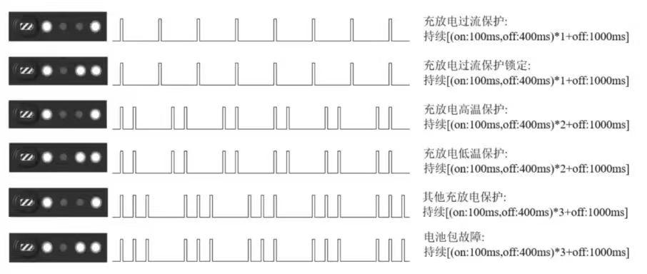

5.2 指示灯说明
5.2.1 四足机器人尾灯说明
灯光 |
灯语 |
备注 |
|---|---|---|
蓝色常亮 |
开机完成 |
正常状态 |
蓝色闪烁 |
开机中 |
启动失败，常见于使用有线连接运行 sdk 后，未进行 IP 配置的恢复 |
白色常亮 |
实验室模式 |
此模式下可使用特技动作 |
绿灯常亮 |
sdk控制模式 |
使用控制权切换功能并处于sdk控制模式 |
黄灯常亮 |
电池电量低于 20% |
电池电量不足，无法开启狂暴模式，无法进行 sdk 控制 |
黄灯闪烁 |
电池电量低于 5% |
电池电量不足，需立即充电 |
红灯常亮 |
关节温度过高，需要冷却 |
|
红灯闪烁 |
系统异常 |
需要联系售后排查 |
5.2.2 电池指示灯说明

若在充电时指示灯闪烁状态为"充放电高温保护"，则需要将电池拿出，静置半个小时后再进行充电。